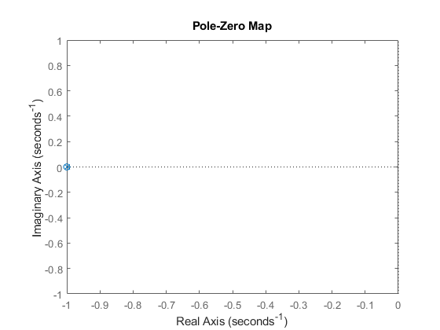
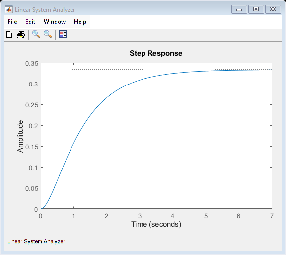
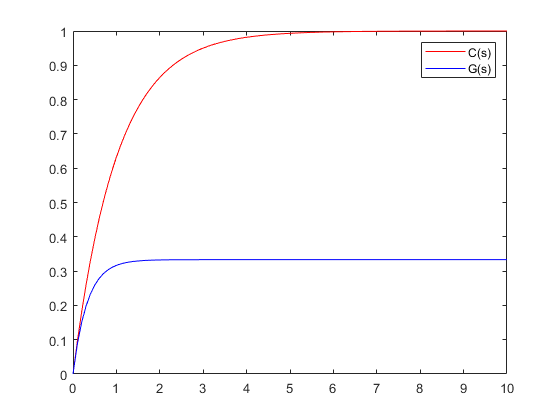
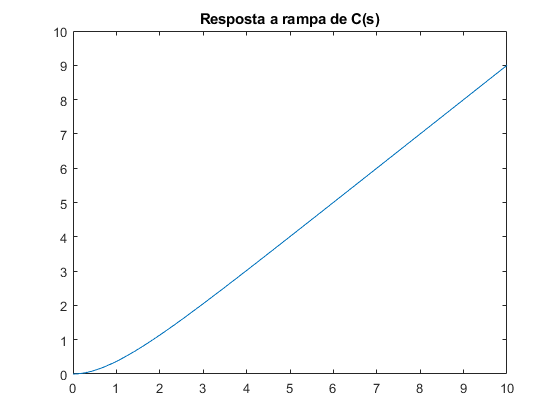
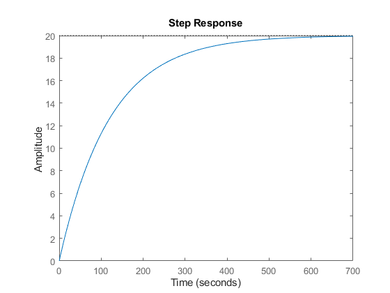
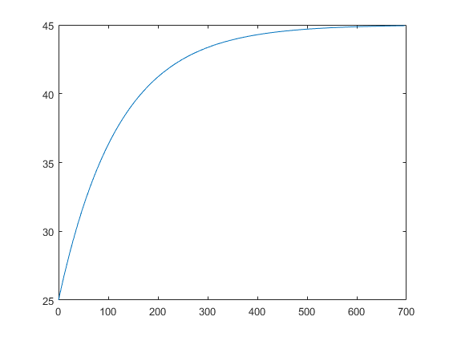
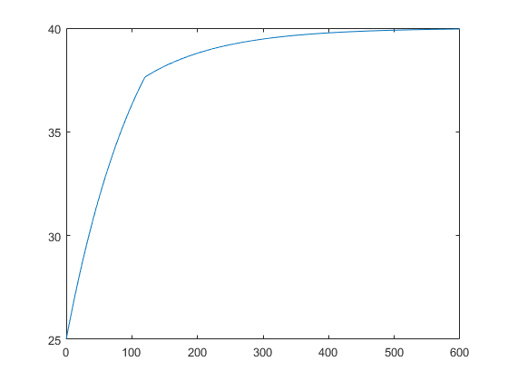

Laboratório de Sistemas Dinâicos
Prática 03 01/04/2024 Autores: Victor Hugo Daia Lorenzato e Whilker Henrique Santos Silva
Contents
Limpar workspcade
close all;
clear;
clc;
Ex01 A
s = tf('s');
p = s^2 + 2*s + 1;
q = s + 1;
G = p*q;
printsys(G.num{1}, G.den{1});
num/den =
s^3 + 3 s^2 + 3 s + 1
---------------------
1
Ex01 B
G = q/p; fprintf('polo: %d\n',pole(G)); fprintf('zero: %d\n',zero(G));
polo: -1 polo: -1 zero: -1
Ex01 C
s = tf('s');
p = s^2+2*s+1;
q = s+1;
disp(evalfr(p,-1));
0
Ex01 D
G = q/p; pzmap(G);
Ex02 A
s = tf('s');
C = 1/(s+1);
G = 1/(s+3);
T = series(C,G);
printsys(T.num{1},T.den{1});
num/den =
1
-------------
s^2 + 4 s + 3
Ex02 B
ltiview(T);
Ex02 C
t = 0:0.1:10; c=step(C,t); g=step(G,t); plot(t,c,'r'); hold on; plot(t,g,'b'); hold off; legend('C(s)', 'G(s)');
Ex02 D
s = tf('s'); rampa = 1/(s^2); T = series(C,rampa); t = 0:0.1:10; R = impulse(T,t); figure; plot(t, R); title('Resposta a rampa de C(s)');
Ex03 A
C = 1/(s+1); G = (1/3)/(1/3*s + 1); [Kc, Zc, Pc] = tfdata(C,'v'); [Kg, Zg, Pg] = tfdata(G,'v'); disp('Parâmetro C(s)'); fprintf('ganho: %f\n',Kc(2)); fprintf('constante de tempo: %f\n',-1/pole(C)); fprintf('tempo morto: %f\n',0); fprintf('polo: %f\n',pole(C)); fprintf('zero: %f\n\n\n',zero(C)); disp('Parâmetro G(s)') fprintf('ganho: %f\n',Kg(2)); fprintf('constante de tempo: %f\n',-1/pole(G)); fprintf('tempo morto: %f\n',0); fprintf('polo: %f\n',pole(G)); fprintf('zero: %f\n',zero(C));
Parâmetro C(s) ganho: 1.000000 constante de tempo: 1.000000 tempo morto: 0.000000 polo: -1.000000 zero: Parâmetro G(s) ganho: 0.333333 constante de tempo: 0.333333 tempo morto: 0.000000 polo: -3.000000 zero:
Ex03 B
s = tf('s'); C = 1/(s+1); G = 1/(s+3); Cdegrau = step(C); Gdegrau = step(G); save respostaDegrauC Cdegrau save respostaDegrauG Gdegrau
Ex03 C
T = series(C,G); Tdegrau = step(T); save respostaDegrauT Tdegrau;
Ex04 A
s=tf('s');
D_s = 5/(0.5*s+1);
U_s = 4/(0.5*s+1);
Y_s = series(U_s,D_s);
printsys(Y_s.Numerator{1}, Y_s.Denominator{1});
num/den =
20
-----------------
0.25 s^2 + s + 1
Ex04 B
s = tf('s');
Y = 20/(120*s+1);
step(Y);
 Ex04 C
s = tf('s');
Y = 20/(120*s+1);
[y, t] = step(Y);
plot(t,y+25);
 Ex04 D
s = tf('s');
t = 0:0.01:600;
Y1 = 20/(120*s+1);
Y2 = 5/(120*s+1)*exp(-120*s);
y1 = step(t,Y1);
y2 = step(t,Y2);
plot(t,y1+25-y2);
